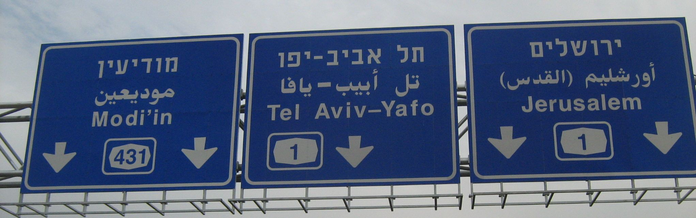

Languages
日本語 Nihongo Japanese
ひらがな Hiragana and 片仮名 Katakana
| A | I | U | E | O | |
| . . . | あア | いイ | うウ | えエ | おオ |
| K | かカ | きキ | くク | けケ | こコ |
| G | がガ | ぎギ | ぐグ | げゲ | ごゴ |
| S | さサ | しシ SHI | すス | せセ | そソ |
| Z | ざザ | じジ JI | ずズ | ぜゼ | ぞゾ |
| T | たタ | ちチ CHI | つツ TSU | てテ | とト |
| D | だダ | ぢヂ | づヅ | でデ | どド |
| N | なナ | にニ | ぬヌ | ねネ | のノ |
| H | はハ | ひヒ | ふフ FU | へヘ | ほホ |
| B | ばバ | びビ | ぶブ | べベ | ぼボ |
| P | ぱパ | ぴピ | ぷプ | ぺペ | ぽポ |
| M | まマ | みミ | むム | めメ | もモ |
| Y | やヤ | ゆユ | よヨ | ||
| R | らラ | りリ | るル | れレ | ろロ |
| W | わワ | をヲ | |||
| N | んン | ||||
例 Rei Examples
あい ai love.
いう iu to speak.
あお ao blue, or green? Similar to "xanh" in Vietnamese. I wonder why both languages don't distinguish those colors. What about Chinese, Korean, etc.?
かく kaku to write.

あく aku evil.
Français
C'est pour cela que je suis née. I was born for this.---Joan of Arc. Also title and lyrics to one of Journey's songs.
Ænglisc Old English
Mæl is me to feran. It is time for me to go. (Beowulf, l. 316) Trivia: Mal from Inception is probably named after the German word for Time.
Ofer hron rade. Over the whale's road, i.e. the sea.
Latin
Stat sua cuique dies. To each his day is given.
Italiano
Locuzioni latine. Latin phrases.
Elenco dei proverbi, detti ed espressioni in lingua latina, molti dei quali in uso presso gli antichi romani. List of proverbs, sayings, and expressions in Latin, many of which were used by ancient Romans.
Español
Instagram, la nueva guía turística del siglo XXI. Instagram, the new tour guide of the 21st century.
اللغة العربية Arabic
مَرْحَبَاً marhaban hello.
Arabic and Hebrew look a lot like Elvish:

All beings are born free and equal in dignity and rights. They are endowed with reason and conscience and should act towards one another in a spirit of brotherhood.
"I cannot read the fiery letters," said Frodo in a quavering voice.
"No," said Gandalf, "but I can. The letters are Elvish, of an ancient mode, but the language is that of Mordor, which I will not utter here. But this in the Common Tongue is what is said, close enough:"
One Ring to rule them all, One Ring to find them,
One Ring to bring them all and in the darkness bind them.
עברית Hebrew
中文 Zhōngwén Chinese
你好！Nǐ hǎo How are you?
下载 Xiàzài Download. Very good to know.
Tiếng Việt Vietnamese
Vietnamese and Thai
Vietnamese intonation sounds a lot like Thai.
Deutsch German
Wo bist du? Where are you?
Ich bin in Berlin. I am in Berlin.
Reference
- Everything else from the web.